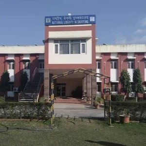
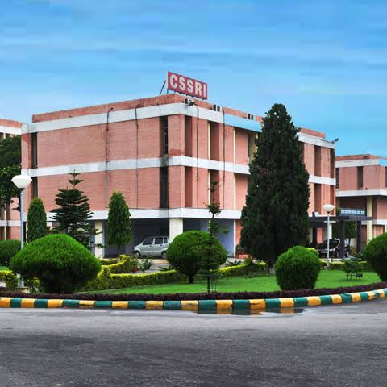

Dr.Kalpana Chawla
Born in Karnal, Haryana, Kalpana Chawla was an aeronautical engineer who made history as the first Indian-born woman to fly into space. She flew her first mission in 1997 aboard Space Shuttle Columbia (STS-87) as a primary robotic arm operator.

National Dairy Research Institute
The ICAR-NDRI in Karnal is India's premier institution for dairy education, research, and technology.It plays a crucial role in advancing cattle breeding, cloning, and milk processing to boost the nation's agricultural economy.

Central Soil Salinity Research Institute
Established in 1969 under ICAR-CSSRI in Karnal is India's premier research organization dedicated to reclaiming salt-affected agricultural land. It develops innovative technologies for managing soil salinity, subsurface drainage, and the productive use of poor-quality groundwater.